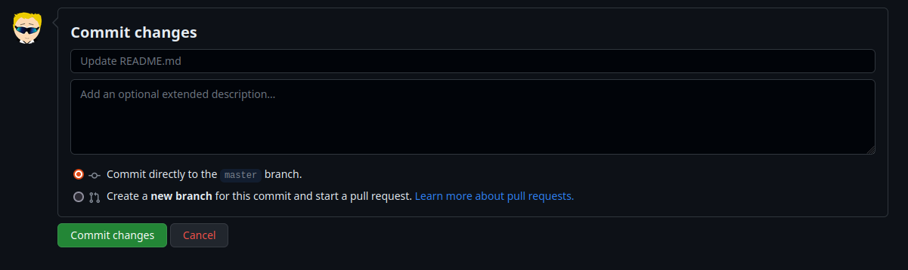
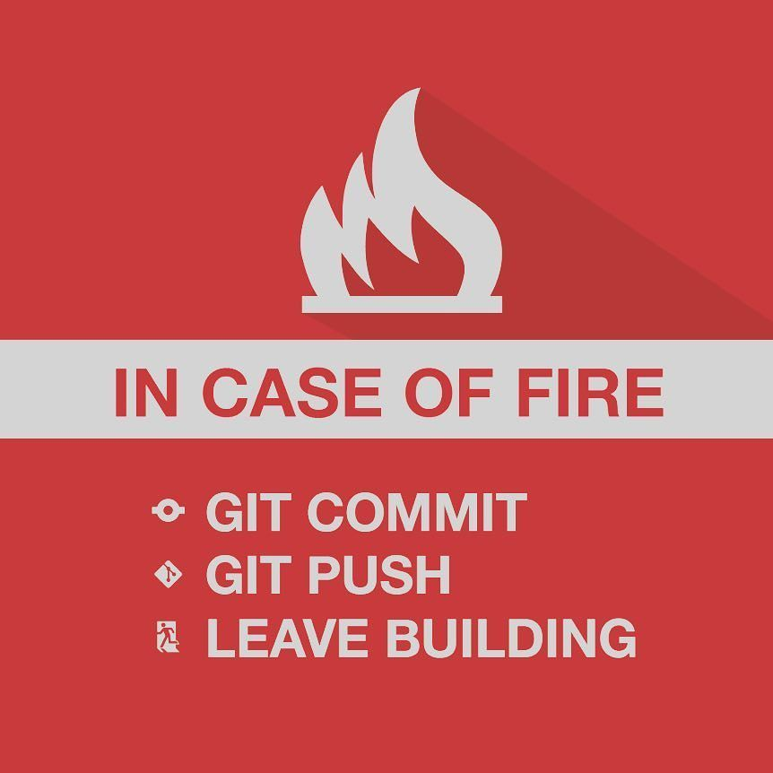
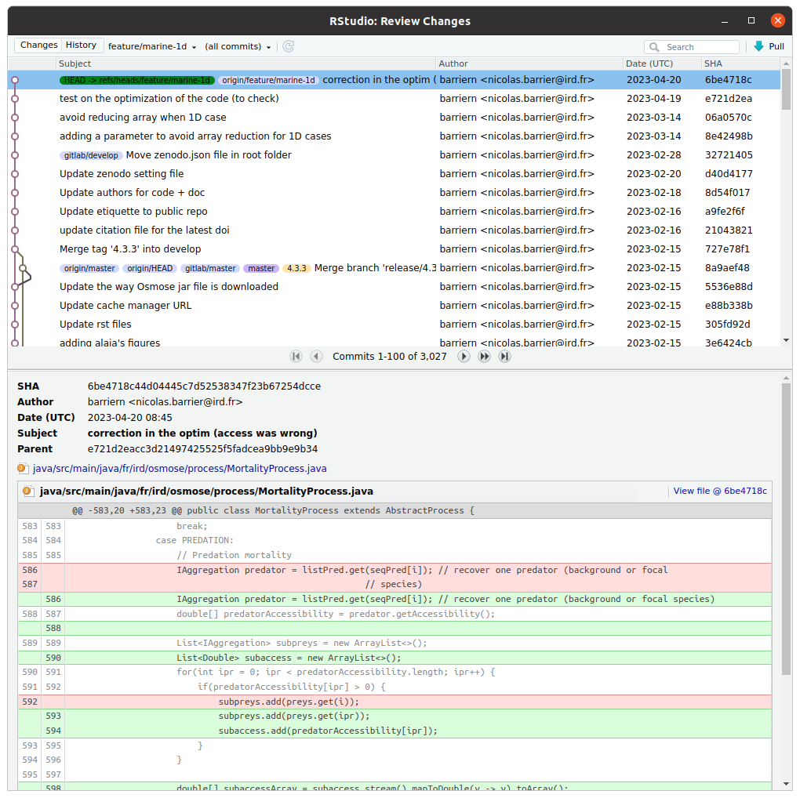

![]()
flowchart LR
idw(Workspace)
idi(Index)
idl(Local)
idw -->|git add| idi
idi -->|git commit| idl
classDef workspace fill:lightgray,stroke:black,color:black
classDef index fill:lightblue,stroke:black,color:black
classDef local fill:lightgreen,stroke:black,color:black
class idw workspace;
class idi index;
class idl local;
Git training
Presentation of the Git Software
What is Git?

- The most popular Version Control Software (VCS)
- Free and open source
- Light and local use (without internet)
- Manages and tracks versions of a project (code, manuscript, data)
- Can be linked with remote server (GitHub, Gitlab)
What is Git for?
Track changes (commits) over time with information
- who, when and what are the changes
Eventually go back in time
Highlight a specific version of the project (tags).
- For example, new software versions.
Synchronize the project in the cloud with remote servers (GitHub, Gitlab)
Resolve version conflict when simultaneous changes
Create derivates of a project (branches):
- production, development, feature
Publish the project (open science)
In short…


Installation and configurations
Installing Git
Windows and Mac
Download and install Git from https://git-scm.com/downloads.
When done, open Git Bash
Linux
Open a Terminal window and type:
sudo apt install git
A bit of Unix
To use Git on Git Bash or Terminal, we need to learn some basic Unix commands:
- Change directory:
cd my/new/directory - Go to parent directory:
cd .. - Find current directory:
pwd - List directory content:
ls - Create new folder:
mkdir -p folder_name - Create an empty file:
touch file.txt - Copy a file:
cp file.txt save_file.txt - Remove a file/folder:
rm -r file.txt - Rename/Move a file:
mv file.text my/dest/renamed.txt
Git configuration
On Git Bash or in the Terminal:
- Type
git config --global user.name "Firstname Lastname" - Type
git config --global user.email "myadresse@ird.fr"
Note
These two lines identify you in the history of a project.
- Type
git config --global --listto see the global git configuration.
Git configurations: aliases
To create Git aliases (i.e. shortcuts):
- Type
git config --global alias.tree "log --graph --decorate --pretty=oneline --abbrev-commit" - Type
git config --global alias.br "branch -vv" - Type
git config --global alias.re "remove -vv"
You can now call the git tree, git br and git re commands.
Getting started with Git in local
Git architecture
Workspace: your working directory \(\rightarrow\) your computerLocal: the local repository \(\rightarrow\) contains the history of your projectIndex: a buffer betweenWorkspaceandLocal\(\rightarrow\) list of the files that will be sent fromWorkspacetoLocalgit add: the command to add the file(s) in theIndexgit commit: the command to validate the changes (moves the files fromIndextoLocal)
Tip
To help understand, think of moving house. Workspace=old house; Local repository=new house; Changes=boxes; Index=moving truck
Getting started
- Move to the folder where you want to work by using the
cdcommand - Create a folder called
training-gitby typingmkdir training-git - Move to the folder by typing
cd training-git - Type
ls -alrt. What do you see? - Type
git init. Read the console output - Type again
ls -alrt. What is new?
Note
A .git folder has appeared. It contains the full history of your project (Local repository)
- Type
git statusandgit log. What does it tell you?
First commit
Create a
README.mdfile by typingtouch README.mdType
git status\(\rightarrow\) what does it tell you aboutREADME.md?Type
git add README.mdandgit status\(\rightarrow\) what is the new status of the file?
flowchart LR idw(Workspace) -->|git add| idi(Index) classDef workspace fill:lightgray,stroke:black,color:black classDef index fill:lightblue,stroke:black,color:black classDef local fill:lightgreen,stroke:black,color:black classDef remote fill:yellow,stroke:black,color:black class idw workspace; class idi index;
- Type
git commit -m "First commit"and typegit statusandgit log
flowchart LR idw(Index) -->|git commit| idl(Local) classDef workspace fill:lightgray,stroke:black,color:black classDef index fill:lightblue,stroke:black,color:black classDef local fill:lightgreen,stroke:black,color:black classDef remote fill:yellow,stroke:black,color:black class idw index; class idl local;
%%{init: { 'logLevel': 'debug', 'theme': 'base', 'gitGraph': {'rotateCommitLabel': true}}}%%
gitGraph
commit id: "0f0e96a"
Note
0f0e96a is a short version of the identifier of the commit
Second commit
- Open the
README.mdfile, add# Git trainingand save - Type
git status\(\rightarrow\) what is the status of the file? - Type
git diff\(\rightarrow\) what does this command do?
flowchart LR idw(Local) -->|git diff| idl(Workspace) classDef workspace fill:lightgray,stroke:black,color:black classDef index fill:lightblue,stroke:black,color:black classDef local fill:lightgreen,stroke:black,color:black classDef remote fill:yellow,stroke:black,color:black class idw workspace; class idl local;
- Type
git add README.mdandgit commit -m "Second commit" - Type
git log
%%{init: { 'logLevel': 'debug', 'theme': 'base', 'gitGraph': {'rotateCommitLabel': true}}}%%
gitGraph
commit id: "0f0e96a"
commit id: "c6dc2bc"
Reverting a commit
To revert a commit, i.e. to cancel changes done in a previous one:
- Type
git revert -n c6dc2bc(replacec6dc2bcby your commit id) - Type
git status. What happens? - The
README.mdfile is now modified and staged (i.e. in theIndex) - To see what has been changed, type
git diff --staged - To commit this modification, type
git commit -m "Revert commit"
%%{init: { 'logLevel': 'debug', 'theme': 'base', 'gitGraph': {'rotateCommitLabel': true}}}%%
gitGraph
commit id: "0f0e96a"
commit id: "c6dc2bc"
commit id: "-c6dc2bc" type: REVERSE
Note
The -n option is to prevent an automatic commit. Therefore you need to commit yourself
Ignoring files
It is possible to tell Git to ignore some files by using a .gitignore file (for example .Rdata or .tmp files).
- Create an empty
output.Rdatafile and typegit status - Create a
.gitignorefile and write*.Rdata. Type againgit status
The output.Rdata file does not appear as an Untracked file anymore
- Type
git add .gitignoreandgit status - Type
git commit -m "Fourth commit"
%%{init: { 'logLevel': 'debug', 'theme': 'base', 'gitGraph': {'rotateCommitLabel': true}}}%%
gitGraph
commit id: "0f0e96a"
commit id: "c6dc2bc"
commit id: "-c6dc2bc" type: REVERSE
commit id: "9670a59"
Tip
To list the ignored files, type git ls-files --others --ignored --exclude-from=.gitignore
Moving in the history
- Type
git checkout v1.0.0\(\rightarrow\) move to a tag
%%{init: { 'logLevel': 'debug', 'theme': 'base', 'gitGraph': {'rotateCommitLabel': true}}}%%
gitGraph
commit id: "0f0e96a"
commit id: "c6dc2bc"
commit id: "-c6dc2bc" type: REVERSE
commit id: "9670a59"
commit id: "07e8835" tag: "v1.0.0" type:HIGHLIGHT
- Type
git checkout 0f0e96a\(\rightarrow\) move to a specific commit
%%{init: { 'logLevel': 'debug', 'theme': 'base', 'gitGraph': {'rotateCommitLabel': true}}}%%
gitGraph
commit id: "0f0e96a" type:HIGHLIGHT
commit id: "c6dc2bc"
commit id: "-c6dc2bc" type: REVERSE
commit id: "9670a59"
commit id: "07e8835" tag: "v1.0.0"
- Type
git checkout main\(\rightarrow\) move at the latest commit of the main branch
%%{init: { 'logLevel': 'debug', 'theme': 'base', 'gitGraph': {'rotateCommitLabel': true}}}%%
gitGraph
commit id: "0f0e96a"
commit id: "c6dc2bc"
commit id: "-c6dc2bc" type: REVERSE
commit id: "9670a59"
commit id: "07e8835" tag: "v1.0.0" type:HIGHLIGHT
Tip
HEAD is a symbolic reference pointing to wherever you are in your commit history, as shown in git log
Display differences
- Type
git diff 0f0e96a v1.0.0\(\rightarrow\) compares a commit and a tag.
Warning
Order matters when using git diff. Differences are shown with the reference state considered to be the first argument.
flowchart LR id1(0f0e96a)-->|git diff| id2(v1.0.0) classDef workspace fill:lightgray,stroke:black,color:black classDef index fill:lightblue,stroke:black,color:black classDef local fill:lightgreen,stroke:black,color:black classDef remote fill:yellow,stroke:black,color:black class id1,id2 local;
Type
git diff 0f0e96a c6dc2bc\(\rightarrow\) compares two commits.Type
git diff 0f0e96a HEAD\(\rightarrow\) compares where you are in the history (HEAD) with a given commit.
Using Git with remote server
Using remotes
In addition of saving the history, Git has other advantages. It allows to:
- Save a project remotely
- Synchronization with different computers (laptop, HPCs)
- Share a project (codes, packages) with the community
- Reproducible science
To do so, a \(4^{th}\) component in the Git architecture must be considered: the Remote repository. It contains a remote version of the history of your project
flowchart LR
idw(Workspace)
idi(Index)
idl(Local)
idr(Remote)
idw -->|git add| idi
idi -->|git commit| idl
idl -->|git push| idr
idr --->|git pull| idw
idr --->|git fetch| idl
classDef workspace fill:lightgray,stroke:black,color:black
classDef index fill:lightblue,stroke:black,color:black
classDef local fill:lightgreen,stroke:black,color:black
classDef remote fill:yellow,stroke:black,color:black
class idw workspace;
class idi index;
class idl local;
class idr remote;
Remote hosts
There are several remote hosting possibilities:
Commercial hosts:
- GitHub: https://github.com/
- GitLab: https://gitlab.com/
Institutional hosts:
- GitLab IRD: https://forge.ird.fr/
- GitLab Ifremer https://gitlab.ifremer.fr/
In the following, we will use GitHub.
Tip
GitHub proposes extra-features for students, teachers and researchers. Visit https://education.github.com/benefits for more informations
Creation of a personal access token
To authentificate, you need to create an authentification token (see GitHub authentification of details).
To do so, click on your profile photo and then on Settings:

Creation of a personal access token
- In the left sidebar, click on
Developer settings. - Under
Personal access tokens, clickTokens (classic). - Select
Generate new tokenandGenerate new token (classic).


Creation of a personal access token
- Add a description note and click on the “repo” box, as shown below:

Click on the
Generate tokenbox button.Copy and save in a
.txtfile or in a Password manager tool (for example KeePassXC) your token: this is your password to publish codes! It should look like something like this:
ghp_***************************************Creation of a GitHub repository
- On your GitHub page, click on
Repositories - Click on the the green
Newbutton - Set the name of your remote repository. Leave the other fields empty
- Click on
Create repository

Linking Git local and remote
- In
TerminalorGit Bash, type the following line:
git remote add origin https://github.com/barriern/git-train.git
Warning
Replace barriern by your GitHub login and git-train by the name of your GitHub repository.
Important
The URL must end by .git!
- It connects your
Localrepository with theRemoterepository, called origin
flowchart LR
idl(Local)
idr("Remote<br>(origin)")
idl-->idr
idr-->idl
classDef workspace fill:lightgray,stroke:black,color:black
classDef index fill:lightblue,stroke:black,color:black
classDef local fill:lightgreen,stroke:black,color:black
classDef remote fill:yellow,stroke:black,color:black
class idw workspace;
class idi index;
class idl local;
class idr remote;
- Type
git remote -vv
Linking Git local and remote
Now that the local and remote repositories are linked, the same thing must be done with the branches.
- First, rename your local branch with the name expected by GitHub (either
mainormaster):- Type
git branch -M main
- Type
- Push your branch on the remote server:
- Type
git push -u origin main
- Type
It connects the local and remote main branches (-u option stands for --set-upstream) and sends the local commits to the remote branch
flowchart LR
idl("Main<br>(Local)")
idr("Main<br>(Remote)")
idl-->idr
idr-->idl
classDef workspace fill:lightgray,stroke:black,color:black
classDef index fill:lightblue,stroke:black,color:black
classDef local fill:lightgreen,stroke:black,color:black
classDef remote fill:yellow,stroke:black,color:black
class idw workspace;
class idi index;
class idl local;
class idr remote;
- Type
git branch -vv - Refresh your repository webpage: what do you see? what is missing?
Synchronization from the remote
In GitHub, click on the
README.mdfile and then on the edit buttonAdd a
Update from Githubline and click onCommit changes


The
Remotechange ofREADME.mdis not yet visible inWorkspace!In
Git BashorTerminal, typegit pull
flowchart RL
idr(Remote)
idw(Workspace)
idr -->|git pull| idw
classDef workspace fill:lightgray,stroke:black,color:black
classDef index fill:lightblue,stroke:black,color:black
classDef local fill:lightgreen,stroke:black,color:black
classDef remote fill:yellow,stroke:black,color:black
class idw workspace;
class idi index;
class idl local;
class idr remote;
- Look again at the
README.mdfile on your computer. You should see the update.
Synchronization: conflicts
- On GitHub, add
x = 1at the end of theREADME.mdfile. Do not pull the changes! - On your computer, edit the
README.mdand addx = 2. - Type
git add README.md - Type
git commit -m "Fifth commit" - Type
git push. What do you see? - Type
git pullandgit status. An error occurs because there is a conflict in theREADME.mdfile that cannot be solved by Git.
%%{init: { 'logLevel': 'debug', 'theme': 'base', 'gitGraph': {'rotateCommitLabel': true}}}%%
gitGraph
commit id: "0f0e96a"
commit id: "c6dc2bc"
branch origin/main
commit id: "x is 1"
checkout main
commit id: "x is 2"
Synchronization: conflicts
- Open the
README.mdfile. You should see:
<<<<<<< HEAD
x = 2
=======
x = 1
>>>>>>> 70a4c105e377db282c0769606960f0afcccdd071
Important
These are conflicts markers. Git does’t know whether to chose x = 1 or x = 2. This is your job
- Open the file, remove the conflict markers and solve the value of x by setting
x = 3 - Add, commit and push the changes
- Refresh the GitHub page and look at the file
%%{init: { 'logLevel': 'debug', 'theme': 'base', 'gitGraph': {'rotateCommitLabel': true}}}%%
gitGraph
commit id: "0f0e96a"
commit id: "c6dc2bc"
branch origin/main
commit id: "x is 1"
checkout main
commit id: "x is 2"
merge origin/main tag: "x is 3"
Tip
To avoid conflicts, use git pull and git push extensively
Cloning an existing repository
The git clone command allows to synchronize locally an existing remote repository.
- On GitHub, create a new repository as done previously.
- This time, include a
README.mdand eventually aLICENCEfile - Copy the link to the new GitHub repository
- On Git Bash or Terminal, type
git clone https://github.com/barriern/new-repo.git(replace the URL by the proper name)
flowchart RL
idr(Remote)
idw(Workspace)
idr -->|git clone| idw
classDef workspace fill:lightgray,stroke:black,color:black
classDef index fill:lightblue,stroke:black,color:black
classDef local fill:lightgreen,stroke:black,color:black
classDef remote fill:yellow,stroke:black,color:black
class idw workspace;
class idi index;
class idl local;
class idr remote;
- Move to the cloned folder by typing
cd new-repo(replace with the name of your cloned folder) - Type
git branch -vv,git remote -vvandgit logto see the full history.
Cloning an existing repository
Tip
To create a Git repository from scratch the easy way, create the repository on GitHub with a README.md.
Local and remote repositories and branches are automatically synchronized!
Then add your files on your local folder, add, commit, push
Important
Do not clone or initialize a Git repository in another Git repository!
Conclusion: good practice
- Before starting working on a project, do a
git pull - Commit very often using
git commitextensively - Push often as well using
git push - Use
git statusextensively to know what you have done

Git clients
Git clients: what is it?
Git Clients are softwares that facilitate the use of Git (see Git Guis for a list).
Beside, most code editors include Git functionalities
Git clients: VSCode

Git clients: RStudio

Git clients: Netbeans

Git branches
Git branches
Working with branches allows to create derivates for a project. For example:
- A
mainbranch for the production version - A
developbranch for preparing the next release - A
featurebranch for testing new features
%%{init: { 'logLevel': 'debug', 'theme': 'base', 'gitGraph': {'rotateCommitLabel': true}}}%%
gitGraph
commit id: "0f0e96a"
commit id: "c6dc2bc"
branch bugfix
branch develop
checkout develop
commit id: "214e348"
checkout main
commit id: "69bbd79"
merge develop
checkout develop
branch feature
commit id: "0a9ba0c"
checkout bugfix
commit id: "d9d02608"
Creating branches
- Type
git checkout -b develop - Type
git status,git brandgit tree - Open the
README.mdfile, add some text and save. - Type
git add README.md - Type
git commit -m "3rd commit" - Type
git brandgit tree
%%{init: { 'logLevel': 'debug', 'theme': 'base', 'gitGraph': {'rotateCommitLabel': true}}}%%
gitGraph
commit id: "0f0e96a"
commit id: "c6dc2bc"
branch develop
commit id: "214e348"
Switching branch
- Type
git checkout main(orgit checkout master) - Type
git br - Open the
LICENCEfile and add some text in it - Type
git add LICENCE - Type
git commit -m "Third commit" - Type
git tree
%%{init: { 'logLevel': 'debug', 'theme': 'base', 'gitGraph': {'rotateCommitLabel': true}}}%%
gitGraph
commit id: "0f0e96a"
commit id: "c6dc2bc"
branch develop
checkout develop
commit id: "214e348"
checkout main
commit id: "69bbd79"
Merging branches
- On the
mainbranch, typegit merge develop -m "merge-develop" - Type
git logandgit tree
%%{init: { 'logLevel': 'debug', 'theme': 'base', 'gitGraph': {'rotateCommitLabel': true}}}%%
gitGraph
commit id: "0f0e96a"
commit id: "c6dc2bc"
branch develop
checkout develop
commit id: "214e348"
checkout main
commit id: "69bbd79"
merge develop
The merge command puts the commits from the argument branch (here develop) and puts them into the current branch (here main).
Note
During the merging process, another commit is created
Creating branch from another branch
- Type
git checkout -b feature develop - Create a
script.Rfile - Type
git add script.R - Type
git commit -m "Fourth commit"
%%{init: { 'logLevel': 'debug', 'theme': 'base', 'gitGraph': {'rotateCommitLabel': true}}}%%
gitGraph
commit id: "0f0e96a"
commit id: "c6dc2bc"
branch develop
checkout develop
commit id: "214e348"
checkout main
commit id: "69bbd79"
merge develop
checkout develop
branch feature
commit id: "0a9ba0c"
Creating branch from a commit
- Type
git checkout -b feat-com 1831e4ereplacing1831e4eby an actual commit ID. - Create a
script.pyfile - Type
git add script.pyandgit commit -m "Sixth commit"
%%{init: { 'logLevel': 'debug', 'theme': 'base', 'gitGraph': {'rotateCommitLabel': true}}}%%
gitGraph
commit id: "0f0e96a"
commit id: "c6dc2bc"
branch feat-com
branch develop
checkout develop
commit id: "214e348"
checkout main
commit id: "69bbd79"
merge develop
checkout develop
branch feature
commit id: "0a9ba0c"
checkout feat-com
commit id: "d9d02608"
Differences between branches
- Type
git diff develop main
You will see the text that has been added to the LICENCE file (69bbd79 commit)
Warning
Order matters: it shows what has been added to main branch compared to the develop branch
flowchart LR id1(Develop)-->|git diff| id2(Main) classDef workspace fill:lightgray,stroke:black,color:black classDef index fill:lightblue,stroke:black,color:black classDef local fill:lightgreen,stroke:black,color:black classDef remote fill:yellow,stroke:black,color:black class id1,id2 local;
Using branches on remote servers
To push a branch on a remote server
- Switch to the branch you want to push:
git checkout develop - Push the branch as follows:
git push -u origin develop.
Important
On the push command, the last argument is the name branch on the remote server. Make it consistent with the local branch
Use git branch -vv extensively to check the links between local/remote branches.
Deleting a branch (locally)
- Type
git checkout main - Type
git branch -d develop - Type
git br - Type
git branch -d feat-com
An error occurs! The suppression of feat-com implies the loss of the d9d02608 commit. To force the suppression, use -D instead of -d.
- Type
git branch -D feat-com
Note
The suppression of develop was ok because the content of commit 3rd is included in the merge.
Deleting a branch (remotely)
Deletion from the remote branch is not automatic. To delete branch remotely:
git push origin --delete develop
Important
Make sure that the branch should be removed or has been merged. Delete locally first and then remotely
Tip
For the lazy people, the Git Flow extension, managing branches is very easy! Everything is almost done automatically!
Large file storage (LFS)
What for?
To version (reasonably) large files (images, data samples) \(\rightarrow\) Git with LFS extension.
Warning
Make sure that the remote host is compatible with LFS (GitHub is compatible)
Important
Do not use for data that change extensively. It can be used for example to store toy datasets to show how a package work (vignettes, documentation)
LFS install
- LFS is automatically installed with Git on Windows.
- On Linux, it can be installed using
sudo apt install git-lfs - When it is installed, you need to activate it. To do so, type
git lfs install
Tracking files with LFS
- Create a
data.csvfile and addYear,Size,Species - Type
git lfs track "*.csv"
A .gitattributes file has appeared, which list all the file extensions managed by Git LFS.
- Type
git add .gitattributes data.csv - Type
git commit -m "Using LFS" - Type
git push - On GitHub, click on your file
data.csvfile.
Remainder
Basic commands
git init: initialise a git project (create .git folder)git add [files]: add files to list of tracked filesgit commit -m ”message”: validate locally a version of the projectgit status: see the unvalidated and untracked changesgit checkout [commit]: load the project version corresponding to the indexgit pull: import the changes from remote project to localgit push: export the changes from local project to the remote server
Git configuration (mandatory)
- Configure your identity:
git config --global user.name "Firstname Lastname" - Configure your e-mail:
git config --global user.email "myadresse@ird.fr"
Branch handling
git branch [branch_name]: create a new branch (but you remain on the previous branch)git branch -b [branch_name]: create a new branch and move to this newly created branchgit checkout [branch_name]: move to the corresponding branchgit merge [branch_name1] [branch_name2]: merge two different branch, you may need to resolve version conflict.git branch -d [branch_name1]: delete a branch (safe mode)git branch -D [branch_name1]: delete a branch (unsafe mode)
Linking with remote
git clone [URL]: Import an existing project from remote server.git remote add origin [URL]: link directly the local repository with a remote
Authentication of your computer and the remote server
- SSH key: easy way on Linux distributions
- Authentication Token
Good practices
- Pull before any work on the project
- Commit as frequently as possible
- Write explicit commit message
- Push regularly
IDE (graphical user interface) with Git
- R
- RStudio
- Visual Studio Code
- Python
- Spyder
- Visual Studio Code
- Pycharm (all JetBrain softwares)
Sources
- Plateau bioinformatique, Montpellier: Formation Git(Lab) (05/04/2018)
- UMR AMAP (Atelier MAIA P3M), Montpellier: Introduction à GIT (04/04/2019)